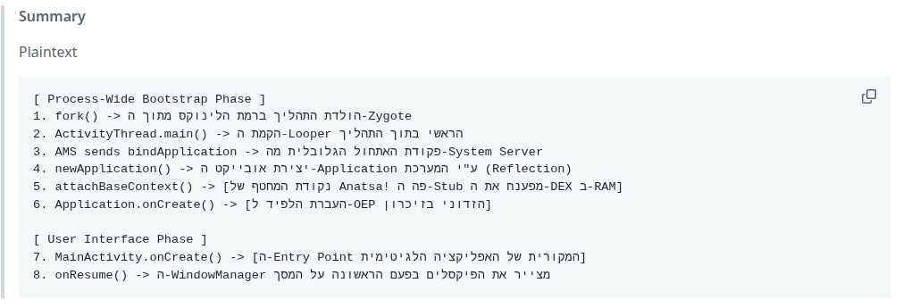
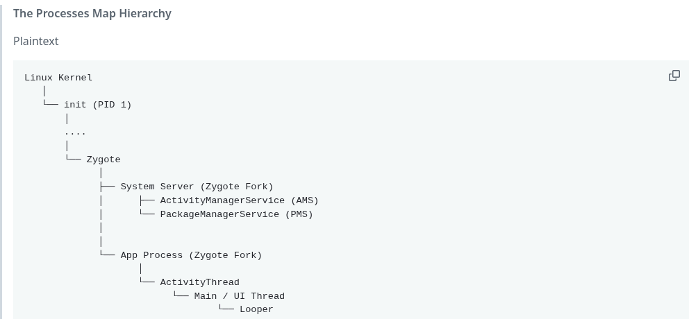
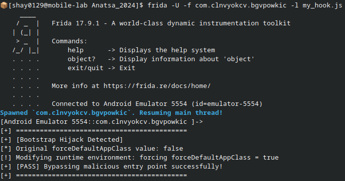
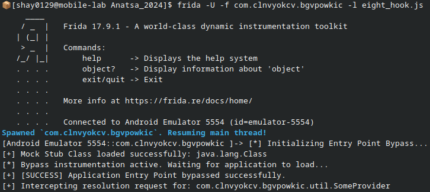

Android Bootstrap Hijacking
מאת שי מרדכי
הקדמה
הרבה מאוד משתמשי אנדרואיד (ואפילו מפתחים) לא מודעים לנתון הבא:
"עולם האנדרואיד" כפי שאנחנו מכירים אותו, לא באמת קיים ברגע שהמכשיר נדלק. בשניות הראשונות, הטלפון שלכם פשוט פלטפורמת Linux רגילה לחלוטין.
המאמר מתמקד בשבריר השניה לאחר ריצת האפליקציה על מכשיר האנדרואיד, וכיצד נוזקות מתקדמות מנסות "לעצור את הזמן" ולהידמות למערכת ההפעלה בעצמה, עוד לפני שהמשתמש רואה מסך כלשהו.
במאמר זה, ננתח חלק מהנוזקה Anatsa - כלי תקיפה ממשפחת ה-Banking Trojans, המיועד לגניבת פרטי גישה לחשבונות פיננסיים. ב-2024 היא הגיעה ל-100,000 הורדות ב-Google Play עד שהסירו אותה. הנוזקה הזו, מבצעת עקיפה לא שיגרתית של הצגת ה-UI של האפליקציה.
בחרתי לנתח אותה, כמקרה בוחן ל-Framework שפיתחתי למידול התנהגות נוזקה לפי 5 שכבות, ו-Anatsa פשוט ביצעה כל אחת מהן.
התרשים מתאר את תהליך יצירת אפליקציה - החל ביצירת תהליך, וכלה בהצגת חלון.

פרק א - המירוץ מתחיל
כאשר משתמש מריץ אפליקציה לגיטימית, עץ התהליכים נראה כך:

ה-Zygote הוא בעצם טמפלט נקי עבור כל אפליקציית אנדרואיד. כדי להכין את הקרקע, תהליך ה-Zygote מאתחל שלושה רכיבים בסיסיים:
- ה-Android Runtime: ה-ART הינו "המכונה הוירטואלית", המסוגלת לקרוא ולהריץ קוד Java או Kotlin (קבצי ה-DEX).
- ה-Android Framework: טעינה מראש של אלפי מחלקות ומשאבי מערכת אל הזיכרון.
- סוקט מקומי: ערוץ תקשורת שמאזין לבקשות
fork(). ה-Zygote יוצר אותו לפני שעדיין ה-System Server נולד.
הפיצול
במהלך ה-Boot, מתבצע fork() ראשון שיוזם ה-Zygote. נוצר תהליך בן שירש את ה-ART, את ה-Framework, ובלית ברירה, גם את הסוקט.
מתכנתי קוד המקור של אנדרואיד, הזדרזו לסגור את הסוקט מטעמי אבטחה, כפי שניתן לראות בקטע הקוד הבא:
Zygote.closeAllFilesExcept(managedFileDescriptors);ה-Fork "נולד" עם מחרוזת בזיכרון, שתשמש אותו כדי להריץ את ה"ייעוד" שלו בעזרת פונקציות בזמן ריצה (ע"י מנגנון Reflection).
מי שאחראי לכך שה-Fork הראשון ייווצר עם המחרוזת SystemServer.main(), זהו ה-Init (בכבודו ובעצמו). הוא מעביר אותה כחלק מיצירת ה-Zygote עם דגל --start-system-server חד-פעמי (לחיסכון בזמן). כך ה-Zygote מחזיק בזיכרון את המחרוזת ומיד משכפל את עצמו.
בהמשך, כאשר ה-System Server ירוץ ויגיד ל-Zygote שצריך Fork חדש, הוא זה שיקבל את המחרוזת מה-Launcher, ויעביר אותה ל-Zygote דרך ה-Local Socket.
מעתה והלאה, ה-Zygote עובר למצב האזנה בסוקט שפתח. מי שאחראי "להעיר" אותו וליזום קריאות של Zygote Forks, זה רק המנהל הראשי - ה-System Server.
פרק ב - חלוקת תפקידים
תהליך ה-System Server
הפונקציה SystemServer.main() היא זו ש"מייצגת" את מערכת ההפעלה, ומנהלת את תהליך האפליקציה. שניים מהשירותים המרכזיים שחשוב להכיר הם:
- Activity Manager Service: ה-AMS, הוא ה"מבוגר האחראי" שמנהל את הרכיב המנוהל - ActivityThread שבתוך האפליקציה.
- Package Manager Service: ה-PMS, אחראי לנהל ולשמור את המידע על כל האפליקציות המותקנות במכשיר.
ברגע שמתעורר ה-System Server במהלך ה-Boot, דבר ראשון שהוא עושה זה להריץ את ה-main שלו. ה-PMS סורק את כל קבצי ה-Manifests שיש במכשיר (בפועל, סורק קובץ כללי אחד - כחלק מאופטימיזציה), ומעדכן טבלה פנימית שמגדירה הרשאות ושירותים לכל אפליקציה.
מאוחר יותר, ה-Launcher (מסך הבית) רק "מתשאל" את ה-PMS, כדי לקבל את האייקון והשם (ה-Label) שלה, כדי להציג אותם במסך הבית (כפי שנראה בחלק ג', בקוד ה-XML הראשון).
תהליך אפליקציה
נוצר בכל פעם שהמשתמש לוחץ על ה-Launcher של האפליקציה.
ה-System Server שולח פקודה ל-Zygote דרך ה-Socket: "תשכפל פרוסס חדש". התהליך החדש שנוצר, משתמש ב-Reflection כדי להריץ את ActivityThread.main(), שמפעיל את ה-Looper (נראה בהמשך) ומכין את ה-UI Thread לקבלת הודעות מה-System Server.
ברגע שהאפליקציה "חיה ונושמת", ה-Zygote מסיים את תפקידו וחוזר "לישון". מעתה והלאה, התקשורת השוטפת מתבצעת ישירות בין ה-ActivityThread לבין ה-System Server (ה-AMS), באמצעות מנגנון העברת הודעות מאובטח (IPC) הראשי של אנדרואיד - Binder IPC.
תהליך ה-ActivityThread
זהו "סוכן" שיושב בתהליך האפליקציה, ומקבל את הפקודות מה-AMS. למרות שמו, הוא אינו Thread, אלא מחלקת Java שמנהלת את האפליקציה מבפנים.
כדי לתקשר עם החוץ, הוא מחזיק בתוכו מחלקה פנימית שמאזינה לבקשות מה-AMS. בקשות אלו מועברות לתור של ה-UI Thread.
מנגנוני ה-Socket וה-Binder
נמצאנו למדים, שיש ל-System Server כ-3 תפקידים עיקריים:
- לבקש בעצמו Zygote Forks עבור אפליקציות חדשות.
- לתקשר עם האפליקציה שנוצרה באמצעות ה-AMS.
- לסרוק את קובץ ה-AndroidManifest.xml במהלך ה-Boot או התקנת האפליקצייה באמצעות ה-PMS.
אך כאן עולה שאלה מעניינת: למה המערכת צריכה שני מנגנוני תקשורת (IPC) שונים? בדומה למודלים של IPC בין דפדפן ליישומים בלינוקס, גם כאן התקשורת לא מתבצעת ישירות.
- בשלב ההקמה: שלב שבו עוברת התקשורת דרך ה-Local Socket, בין ה-System Server לבין ה-Zygote. זהו צינור מהיר ופשוט שנועד למטרה אחת בלבד - להעיר את ה-Zygote ולהגיד לו לבצע שכפול.
- בשלב הריצה: שלב שבו עוברת התקשורת דרך ה-Binder, בין ה-AMS לבין ה-ActivityThread.
מנוע החיים של התהליך: ה-Looper של ה-UI Thread
(חשוב להבהיר: ארכיטקטורת אנדרואיד רוויה בלולאות Looper שונות, ולמעשה כמעט לכל Service).
בהקשר של "לידת" אפליקציה, לאחר ה-Fork והרצת הפונקציה הייעודית מ-Framework, יש רק Thread אחד, ה-UI Thread.
בפועל, כל מה שאנחנו קוראים לו 'האפליקציה', יושב על לולאה אחת (Looper) שחיה בתוך ה-UI Thread, שמנוהלת על ידי ה-ActivityThread. היא משהה את ה-UI Thread מלהסתיים, וממתינה לפקודות ה-System Server כדי להריץ את קוד האפליקציה.
כבר הזכרנו שה-System Server מחזיק בזיכרון שלו הרשאות, וביניהן את ה-Entry Point של האפליקציה.
בזמן הריצה, ה-System Server שולח פקודות הרצה (כמו onCreate, onStart וכו'), כדי להניע את ה-Entry Point. הפקודות האלו נשלחות מה-System Server דרך ה-Binder IPC, ומתורגמות להודעות בתוך תור ההודעות של האפליקציה.
ה-UI Thread מצידו לא "נחנק" - הוא יושב בתוך לולאת ה-Looper האינסופית, שולף את הפקודות האלו מהתור אחת אחת בעזרת המתווך שלו, ומריץ את פונקציות האפליקציה בזו אחר זו.
פרק ג - נקודת המחטף
עד כאן, זה מה שהבנתי מחקירת OWASP Uncrackable Level 2. זה כבר הספיק כדי "לשרוף לי את המוח" בקטע טוב. אך מסתבר שזו היתה רק ההתחלה.
שם, קובץ ה-AndroidManifest.xml עבד "לפי הספר". כשהגעתי לחקור את הנוזקה Anatsa, ראיתי שה-Manifest שלה נראה אחרת לגמרי.
Application vs. Activity - שתי נקודות הכניסה
באנדרואיד אין רק "נקודת כניסה" אחת. יש למעשה שתי רמות שונות של הרצת קוד שרצות זו אחר זו האחת ברמת ה"תהליך", והשניה ברמת ה"חלון".
הזכרנו שה-System Server אחראי לשלוח פקודות ל-Looper. יש פקודה אחת שמתרחשת בתחילת הרצת האפליקצייה, והיא מושפעת ממה שכתוב (או לא כתוב) ב-Manifest. הפקודה הראשונה של ה-AMS נקראת bindApplication. היא הטריגר שגורם למערכת ההפעלה ליצור את אובייקט ה-Application (כפי שנראה בהמשך), והיא מתרחשת עוד לפני שהאפליקצייה מריצה UI כלשהו.
ניתוח AndroidManifest.xml של Level 2
<application
android:theme="@style/AppTheme"
android:label="@string/app_name"
android:icon="@mipmap/ic_launcher"
android:allowBackup="true"
android:supportsRtl="true">
<activity android:name="sg.vantagepoint.uncrackable2.MainActivity">
<intent-filter>
<action android:name="android.intent.action.MAIN"/>
<category android:name="android.intent.category.LAUNCHER"/>
</intent-filter>
</activity>
</application>המאפיין android:name הוא נתון שמשמש ליצירת Entry Point. הפעם הוא קיים רק ברמת ה"חלון". אין כאן מאפיין ששייך לשלב ה-bindApplication, לכן ה-Application יהיה ברירת מחדל, ואליו יתווספו מאפיינים גלובליים לאפליקצייה.
ניתוח ה-AndroidManifest.xml של הנוזקה
<application
android:label="PDF Reader: Update"
android:icon="@vista6/vista_res_0x7f060000"
android:name="ihp.opjhprs.fsthjpoyr.rhhkkff"
android:allowBackup="true"
android:usesCleartextTraffic="true">כאן יש תכונה שמשפיעה מאוד על שלב ה-bindApplication. התכונה android:name גורמת למערכת ההפעלה ליצור אובייקט Application מותאם אישית, ולא את אובייקט ברירת המחדל שראינו ב-Uncrackable. בעצם, הוגדר כאן Entry Point מוקדם מאוד ברמת ה-Process, עוד לפני ה-Entry Point של ה-UI.
אם הקוד בשלב זה יכיל פעולות ארוכות, ה-UI Thread ייתקע, והמשתמש יראה מסך שחור וימחק את האפליקציה. לכן, הקוד ב-Entry Point הזה חייב להיות קצר וקטלני. להלן חלק מקוד ה-Entry Point הידני של הנוזקה:
/* JADX INFO: compiled from: StubApp.java */
/* JADX INFO: loaded from: classes.dex */
public class rhhkkff extends Application {
@Override // android.content.ContextWrapper
protected void attachBaseContext(Context base) {
super.attachBaseContext(base);
new eomqmgsskufu(base).oqwrkywwlykpu();
new tttlkqttg(base).mopksfpffv();
kjyylrrmxujekkg.wqlx(this, qhpsx.noxgiqtlgxejjlkguiqsl, qhpsx.pmoerwxrnviwturjgmsrs);
}
}הניתוח הסטטי כאן מוגבל, כי הקוד עבר Obfuscation רציני. מה שכן אפשר לראות כאן מיד, שהקלאס הזה הוא מסוג Stub Unpacking (לפי השם בשורה הראשונה של ה-Info).
ה-Stub Unpacking עובד ב-3 שלבים מרכזיים:
- טעינת קובץ המקור לזיכרון.
- שילוב המחלקות הזדוניות אל תוך סביבת הריצה של האפליקציה.
- העברת השליטה ל-Entry Point של התוכנית המקורית.
הקוד שלעיל מבצע בדיוק את השלבים האלה, אותם נשאיר לשלב ה-Dynamic Analysis עם Frida.
וידוי
ברגע הראשון שהסתכלתי על הקוד, לא הבנתי מי מריץ אותו. הוא נראה כמו 4 פונקציות "באוויר", בלי שאף פונקציית main() קוראת להן!
גיליתי שבאנדרואיד, ה-ART עובדת הפוך משאר סביבות הרצת הקוד שאנחנו מכירים. אפילו מה-JVM בעצמו, אני חייב לקרוא בעצמי לפונקציה שכתבתי כדי שהיא תתחיל לרוץ.
באנדרואיד לעומת זאת, כבר יש מי שקורא ל-Entry Point - אובייקט ה-Application או ה-Activity, וזה מתבצע בשלב שכבר ראינו - יצירת אובייקט ה-Application בעזרת פקודת bindApplication ששולח ה-AMS.
הדוגמה הבאה מקוד ה-Android Framework:
public Application newApplication(ClassLoader cl, String className, Context context) {
return (Application) cl.loadClass(className).newInstance();
}
// -----------------------------------------------------------------
public Activity newActivity(ClassLoader cl, String className, Intent intent) {
return (Activity) cl.loadClass(className).newInstance();
}הנוזקה הגדירה קלאס מותאם אישית בתור Entry Point ידנית, ולכן הוא יתלבש ישירות על אובייקט ה-Application.
כעת אפשר להבין שהקלאס שהוגדר כ-Process Entry Point באובייקט ה-Application, בעצם מורץ ברקע, וכל זה באמצעות קוד מערכת ההפעלה שמשתמש במנגנון Reflection.
הדגמת "הלבשה" ידנית של פונקציות על גבי אובייקט ה-Application בתהליך אתחול ה-Process:
Application.attachBaseContext(...)Application.onCreate()Application.createPackageContext(...)Application.getPackageName()
פרק ד' - אתגר הניתוח הדינמי
לאחר שהבנו שהנוזקה חוטפת את שלב ה-Bootstrap ורצה בתוך attachBaseContext(), עולה שאלה קריטית: איך בכלל אפשר לנתח אותה בזמן אמת? כאן נכנס לתמונה כלי ה-Dynamic Binary Instrumentation המוביל בתעשייה - Frida.
Frida הוא כלי המאפשר לחוקרים להזרים סקריפטים מותאמים אישית של JavaScript ישירות לתוך הזיכרון של תהליכים חיים, ובכך לבצע הזרקת סקריפט (Hooking) לפונקציות ולשנות את התנהגותן בזמן ריצה. הבעיה היא הארכיטקטורה של הנוזקה, שדורשת מאיתנו לשנות את הדרך שבה אנחנו משתמשים ב-Frida.
1. הגישה הרגילה והמכשול שלה: חיבור מאוחר (Attach)
במצב הרגיל (Attach), אנחנו מנסים להתחבר לאפליקציה אחרי שהיא כבר הופיעה על המסך (בשלב ה-UI). ההתחברות מתבצעת הלכה למעשה רק אחרי שהתחיל ה-Entry Point עם אובייקט ה-Activity.
בשלב זה, Frida שולחת פקודה לקרנל: "עצור את ה-Threads של האפליקציה", מזריקה את סוכן הניטור שלה (ה-Frida Agent), ומשחררת את הריצה. לרוע המזל, זה כבר מאוחר מדי. מתודת ה-attachBaseContext() של הנוזקה כבר רצה והסתיימה מזמן, יחד עם אובייקט ה-Application.
2. הדרך לנצח את המירוץ: מצב Spawn
מכיוון שאין לנו שום יכולת אנושית (או טכנית במצב Attach) להיות מהירים יותר מפקודות ה-Bootstrap של ה-System Server, הדרך לנצח היא להקדים את טעינת האפליקציה בעזרת מצב Spawn.
במצב Spawn, האפליקציה מופעלת כרגיל (מה שגורם ל-System Server לבקש Fork מתוך ה-Zygote), אך Frida מתערבת מיד לאחר ה-Fork. היא תופסת את התהליך החדש ומעבירה אותו למצב השהייה, עוד לפני שהפקודה הראשונה של ה-ActivityThread מתחילה לרוץ (לפני ה-Process Entry Point).
כך, כשהנוזקה תגיע לבסוף אל ה-attachBaseContext(), אנחנו כבר נהיה שם בפנים כדי לתפוס אותה בזמן אמת.
3. שבירת חוקי המשחק: Zygote Hook
במקרים קיצוניים של נוזקות מתקדמות (או כאשר קיימות הגנות Anti-Analysis חזקות במיוחד), ניתן להשתמש בשיטה האגרסיבית ביותר: ה-Zygote Hook. במקום להמתין ליצירת תהליך האפליקציה הספציפי, ה-Frida מזריקה את עצמה ישירות לתוך תהליך ה-Zygote המקורי עצמו. המשמעות היא שכל אפליקציה עתידית שתרוץ במכשיר, תשתכפל ותיוולד כאשר ה-Frida Agent כבר נמצא ב-"DNA" שלה, עוד לפני שלב ה-Fork.
ה-Hook במילים פשוטות:
נניח שההוק שלי מתחיל לרוץ מיד אחרי ה-Fork, מה הוא רואה?
- שעוד מעט מתחילה סריקת ה-Manifest.
- הולך להיווצר אובייקט Application - ושם בדיוק נעצור אותו.
נתפוס את מי שקרא ליצירת Application חדש, נכריח אותו ליצור אובייקט נקי, ונחזיר אותו ללא תלות בקוד הזדוני של האפליקציה.
כדי להבין בדיוק מי יוצרת אובייקט חדש, חקרתי את הדרך שבה ה-ActivityThread בונה את האפליקציה, וגיליתי שהוא משתמש במחלקה פנימית בשם LoadedApk. זיהיתי שהפונקציה makeApplicationInner (בתוך מחלקה זו) היא זו שקוראת פיזית ליצירת האובייקט (newApplication). היא מבצעת בדיקה פנימית על הפרמטר הראשון הבוליאני:
if (forceDefaultAppClass || (appClass == null)) {
appClass = "android.app.Application";
}אם הפרמטר הוא false ואין appClass מוגדר (כלומר, אף אחד לא הכניס מאפיין android:name ל-Application בתוך ה-Manifest), ייווצר אובייקט Application ברירת מחדל. אך בגלל שהנוזקה כן קיימה והגדירה appClass זדוני, אנחנו נכריח את המשתנה forceDefaultAppClass להיות true בזמן ריצה, ומיד ייווצר אובייקט appClass חדש ונקי לחלוטין.
Java.perform(function() {
var reset_entry_point = Java.use("android.app.LoadedApk");
reset_entry_point.makeApplicationInner.implementation = function(forceDefaultAppClass, instrumentation, allowDuplicateInstances) {
// Force creation of a clean, default Application class.
forceDefaultAppClass = true;
return this.makeApplicationInner(forceDefaultAppClass, instrumentation, allowDuplicateInstances);
};
});לאחר תיקון קל לתמיכה ב-overload כשיש מספר רב של פונקציות עם אותו השם, ה-Hook הנקודתי הצליח, (אך הוא צפוי להיכשל בהמשך, כשירוצו הבדיקות של הנוזקה בשלב ה-Activity Bootstrap ואז נעדיף אובייקט מותאם אישית).
הפלט:

פרק ה - The Crashed Process
עד שגילינו ש-Application Bootstrap זה ה-Entry Point המוקדם ביותר של אפליקציית אנדרואיד - גיליתי שיש עוד Bootstrap נסתר, אז אל תלכו לשום מקום.
Process crashed: java.lang.ClassNotFoundException: Didn't find class "com.clnvyokcv.bgvpowkic.util.SomeProvider"השגיאה הזו הזכירה לי מידע שראיתי ב-VirusTotal, שה-Provider של הנוזקה הוא SomeProvider (למרות שהשם כבר מרמז לבד). הוא מופיע גם ב-Manifest:
<provider
android:name="com.clnvyokcv.bgvpowkic.util.SomeProvider"
android:exported="true"
android:authorities="com.transportation.ukltd"
android:grantUriPermissions="true"/>המשמעות היא, שיש קוד שרץ קודם שנוצר ה-Default Application!
Provider
זהו פיצ'ר שאנדרואיד הכניסה, כדי לייעל את העבודה לספריות צד שלישי - לאפשר טעינה אוטומטית של קוד שקודם לקוד האפליקציה. נוזקות (ובעיקר Packers), משתמשות בו כדי לטעון את ה-DEX המוצפן, עוד לפני יצירת אובייקט ה-Application.
- שלב א' - נוצר Zygote Fork.
- שלב ב' - הפונקציה
ActivityThread.mainמורצת (ע"י Reflection). - שלב ג' - הפקודה הראשונה (
bindApplication) של AMS נקראת אצל ה-Looper של ה-ActivityThread ובה הנתונים מה-Manifest (שנאספו ע"י PMS). - שלב ד' - נוצר אובייקט Application בזכרון, אבל UI Thread עדיין לא מריץ אותו!
- שלב ה' - כתגובה להודעה מה-AMS, הפונקציה
handleBindApplicationמורצת ע"י ה-ActivityThread, ה"סוכן" של ה-System Server בתוך האפליקציה.
הוא מבצע 2 פעולות:
- ביצוע
ContentProvider.onCreateעבור כל ה-Providers שב-Manifest. - ביצוע
Application.onCreateעבור הרצת אובייקט ה-Application.
פקודת ContentProvider.onCreate
אתחול ה-Providers ע"י פונקציית עזר בשם installContentProviders.
if (!data.restrictedBackupMode) {
if (!ArrayUtils.isEmpty(data.providers)) {
installContentProviders(app, data.providers); // <---
}
}כאן נטען SomeProvider שמריץ את onCreate. (כל Provider בודד, חייב לרשת מ-ContentProvider ולממש את onCreate).
שלב ו' - AMS שולח פקודה ל-ActivityThread, שמפעילה את ה-Activity.onCreate וגורמת להעלאת ה-UI של האפליקציה.
השלכות למחקר הדינמי
ברגע שהרצתי את ה-Hook, נוצר אובייקט Application בזכרון. אמנם כעת חסרה פונקציית הפענוח של קבצי ה-DEX שישבה בראש אובייקט ה-Application של הנוזקה (שדרסנו). זה הוביל לתלונת ה-ClassLoader אודות קובץ ה-DEX האבוד.
בשלב המימוש, רציתי לזייף MySomeProvider תוך כדי ריצה ב-Frida, ולשלוח אותו ל-ClassLoader, כדי שלא יבכה שלא מצא אותו. עם קצת ניסוי וטעיה, למדתי על הדינמיקה עם ה-ClassLoader. לא מספיק להזריק את ה-Class שלי ל-ART, כי ה-ClassLoader מחפש Path של קובץ בדיסק הקשיח (ולא ב-RAM), ברגע טעינת ה-ActivityThread.
תיאור ה-Hook במילים:
- ליצור
SomeProvider.javaולקמפל ידנית ל-DEX. - לאתחל מופע חדש של DexClassLoader, שמירת ה-Path, הכנת MySomeProvider להזרקה ועדכון האב של ה-ClassLoader.
- עצירת שרשרת האספקה והזרקת ה-MySomeProvider שיצרתי, לתוך תהליך קבלת ה-DEX ל-ART (לא הרחבתי, כדי לא לגלוש מגבולות המאמר).
- כפיית אובייקט Default Application (כמו שכבר הכרנו).
הקוד:
Java.perform(function() {
var dexPath = "/sdcard/someprovider.dex";
var ParentClassLoader = Java.use("java.lang.ClassLoader").getSystemClassLoader();
var ClassLoader = Java.use("dalvik.system.DexClassLoader");
var myLoader = ClassLoader.$new(dexPath, "/sdcard/", null, ParentClassLoader);
var MySomeProvider = myLoader.loadClass("com.clnvyokcv.bgvpowkic.util.SomeProvider");
// —----------------------------------------------------------
var BaseDexClassLoader = Java.use("dalvik.system.BaseDexClassLoader");
BaseDexClassLoader.findClass.implementation = function(name) {
if (name === "com.clnvyokcv.bgvpowkic.util.SomeProvider") {
return MySomeProvider;
}
return this.findClass(name);
};
// —----------------------------------------------------------
var reset_entry_point = Java.use("android.app.LoadedApk");
reset_entry_point.makeApplicationInner
.overload('boolean', 'android.app.Instrumentation', 'boolean')
.implementation = function(forceDefaultAppClass, instrumentation, allowDuplicateInstances) {
return this.makeApplicationInner(true, instrumentation, allowDuplicateInstances);
};
});צילום הפלט הסופי:

סיכום
ראינו איך מכשיר האנדרואיד שלנו, כבר לא כ"כ בטוח כמו שחשבנו. המורכבות שלו יוצרת "פתחים", שנוזקות מתקדמות יודעות לנצל. אותי זה הביא למסקנה - להשתמש בו לצרכי מחקר ופחות לצרכים אישיים ושימוש יומיומי (ולהעדיף פלאפון מקשים).
מערכת מורכבת כמו אנדרואיד, מלאה ב-APIs שמקשרים לעוד APIs, והמון דברים קורים "מתחת לפני השטח".
מה שריגש אותי במחקר, הוא לראות איך שבריר שנייה בודד בזמן הריצה, יכול להרגיש כמו "אינסוף", של שעות ארוכות מול המסך. כמו שכתוב בתורה ,"יום לשנה" - יש דברים שקרו ביום אחד, ולוקח שנה לספר אותם.
על המחבר
שי מרדכי, סטודנט לקראת סיום תואר ראשון במדעי המחשב במכון לב, משרת מילואים, נשוי ואב לשניים. משלב לימודי רבנות בכולל, עם תשוקה עמוקה לחקר חולשות, Reverse Engineering ו-Android Internals. אוהב לחקור לעומק מערכות הפעלה ולפרק בעיות מורכבות עד לשורשן.
תודה גדולה לברק גונן - מרצה, חוקר, ובוגר 8200, שהצית בי את התשוקה לחקר מערכות הפעלה ו-RE.
מקורות מידע
- android/app/LoadedApk.java – Implementation of makeApplicationInner()
- android/app/Instrumentation.java – Implementation of newApplication() and newActivity()
- android/app/ActivityThread.java – Implementation of handleBindApplication() and installContentProviders()
- dalvik/system/BaseDexClassLoader.java – Implementation of findClass() used for Dex loading.
- Android Developers: DexClassLoader
- Android Developers: Processes and Threads Overview.
- Android Developers: App Manifest Overview (<application> element).
- Android Developers: ContentProvider
- Android Developers: Create a content provider
- Stefano Santilli: Deep Dive into Android Boot Process (Part 1).
- Stefano Santilli: Android Boot Process (Part 2: From Zygote to SystemServer).
- Cleafy Labs: A Stealthy Threat Uncovered - TeaBot on Google Play Store.
- Frida Documentation: Modes of Operation (Spawn vs. Attach).
- Daniel Bergers: Security Notes 002: Getting Started with Frida.
- Frida Releases: Frida v17.6.0 updates.
- OWASP MASTG: UnCrackable Mobile Apps (Level 2).
- Axelle Apvrille: Reverse Android Malware Like a Jedi Master
- Axelle Apvrille: Live Reverse Engineering of a Trojanized Medical App.
- Malware Sample Hash (SHA-256): 262e1c40fb33ac2cfb766cb277505f6ebdf0851252a33a83859a3bfb3e54af8c (Available on VirusTotal / InQuest).